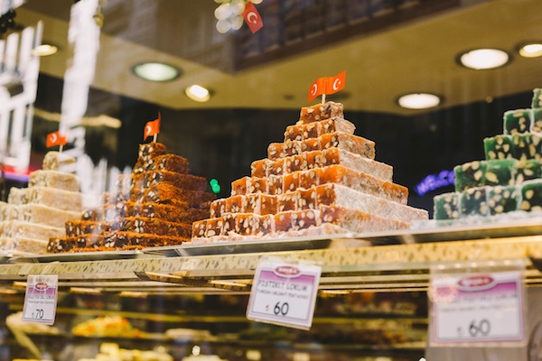
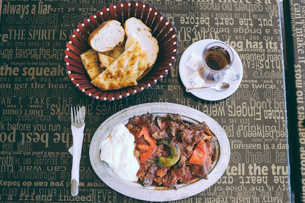
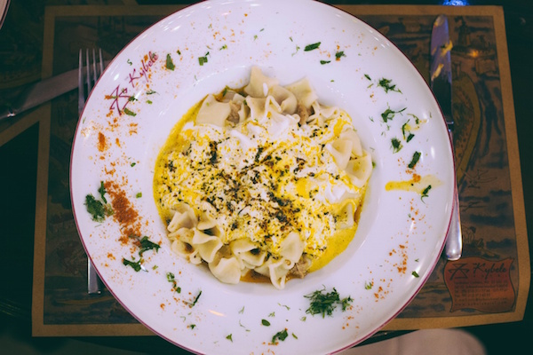
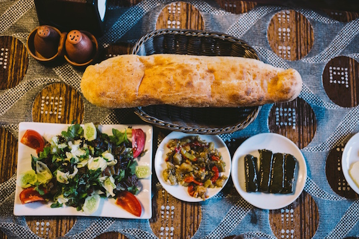
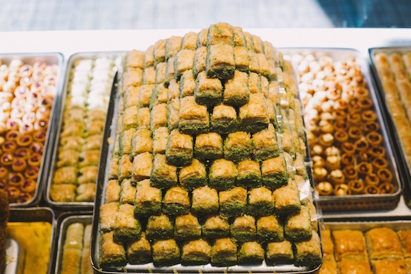
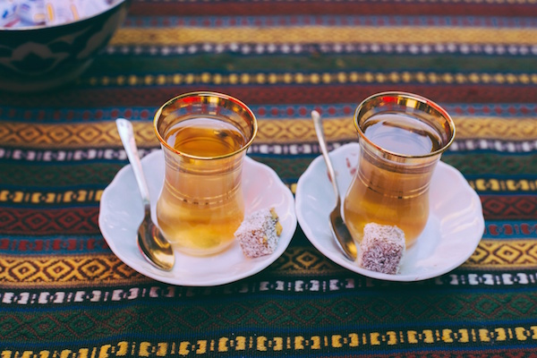
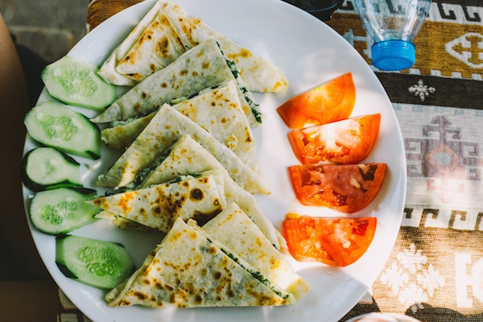
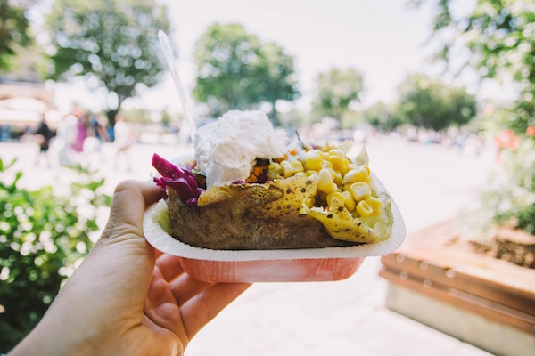
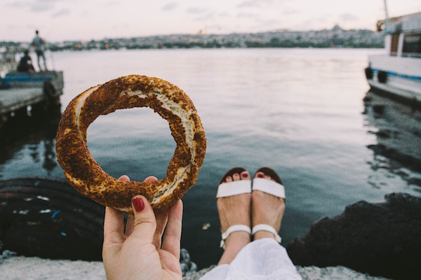
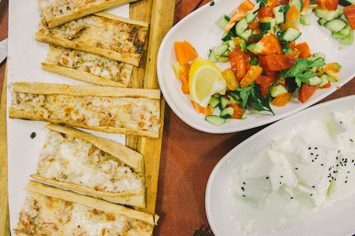

Турецкая сладость
Не дайте розовыми, сахарными подделками, которые вы пробовали в прошлом себя обмануть - Лукум (или Lokum, как его называют местные жители) - это то, что вы никогда не пробовали раньше. Аппетитные сочетания рубленых фисташек, фисташек, грецких орехов или лесных орехов позволят вам насладиться разнообразием вкусов, дающим наслаждение вашим вкусовым рецепторам.
Искандер-Кебаб
Не покидайте Турцию, не попробовав одно из самых популярных (и вкусных) мясных блюд на Северо-Западе. Этот шашлык, состоит из тонко нарезанной баранины, подаваемой с теплым томатным соусом на кусочках традиционного хлеба. В довершение ко всему, щедрая порция йогурта и масла, вы будете лизать свою тарелку в чистом виде.
Манты (Турецкие Равиоли)
Любители макарон, приготовьтесь. Турция имеет собственную версию Равиоли! Маленькие пельмени ручной работы заполняются молотой бараниной или говядиной, а затем завершаются сливочным йогуртовым соусом. Манти тратит много времени на подготовку, но как только вы попробуете кусочек, вы увидите, что тяжелая работа окупается.
Мезе
Будьте уверены, вы, вероятно, не покинете Турцию, не отведав Мезе, который представляет собой небольшой выбор блюд, обычно подаваемых с напитками или перед едой. Турецкая мезза часто состоит из йогурта с травами, хумуса, рисовых листьев винограда (долмы), фрикаделек (кофе), салата из баклажанов, белого сыра и, конечно же, вкусного, теплого пиде. Может быть, есть лучший способ начать ужин?
Пахлава
Это мило, это богато, это почти слишком хорошо, чтобы быть правдой. Слои слоёного теста дополняются мелко нарезанными орехами и удерживаются сиропной красотой. Этот десерт происходит из Османской империи и в настоящее время его можно найти практически на всех улочках Турции. Закажите десерт в ресторане или возьмите его с собой. Неважно, как ты его ешь, на вкус он все равно восхитителен. Это классика, и определенно одно из тех блюд, которые вы должны попробовать в Турции.
Турецкий Яблочный Чай
Яблочный чай - возможно, самый восхитительный чай, который когда-либо пощекочет ваши вкусовые рецепторы. К счастью для вас, недостатка в этом теплом, сладком нектаре богов - нет. Вы найдете его практически в каждом кафе, ресторане и доме. Чай (или çay) - это очень большая часть турецкого гостеприимства. Вы увидите, что даже владельцы магазинов сидят за чашкой чая со своими покупателями.
Гёзлеме
Возможно, один из самых распространённых фаст-фудов в Турции, Гёзлеме - это идеальная закуска для еды на ходу. Как и блинчик, эта пикантная турецкая лепёшка изготавливается из рулонного теста и наполняется различными начинками, такими как сыр, мясо, овощи или картофель. Затем он запечатывается и готовится на сковороде. Попробуйте один из вариантов сыра и шпината - вы не пожалеете. Это однозначно одно из тех блюд, которые вы должны попробовать.
Кумпир (Запечённый Картофель)
Возможно, в прошлом вы уже ели запеченный картофель, но скорее всего, он не будет таким же классным, как Кумпир в Турции. Запекается гигантский картофель, срезается посередине, затем мягкие внутренности смешиваются с обильным вспениванием масла и кучей сыра "кашар". Затем вам предложат бесконечное количество вариантов добавок, включая йогурт, кетчуп, сладкую кукурузу, ломтики колбас, кускус, натертую морковь, оливки и итальянские салаты (и это только некоторые из них).
Симиты
Очень популярная уличная еда, Симит лежит где-то между крендельком и бубликом. Самая дешевая закуска, которую вы найдете на улице, этот круглый хлеб обычно инкрустирован семенами кунжута и может быть съеден в обычном виде или с консервами, такими как варенье, сливочный сыр или, для особого вкуса, - Nutella.
Этли Экмек (Турецкая Пицца)
Любители пиццы, в Турции для вас тоже найдётся что поесть. Наряду с классической турецкой кухней, Этли Экмек - это еще одно блюдо, похожее на пиццу, которое было приготовлено в городе Конья. Чрезвычайно длинный, тонкий кусок плоского хлеба, обычно размером более метра, на него кладётся мясо и сыр, а затем разрезается на более мелкие кусочки. Вкусно ! :)